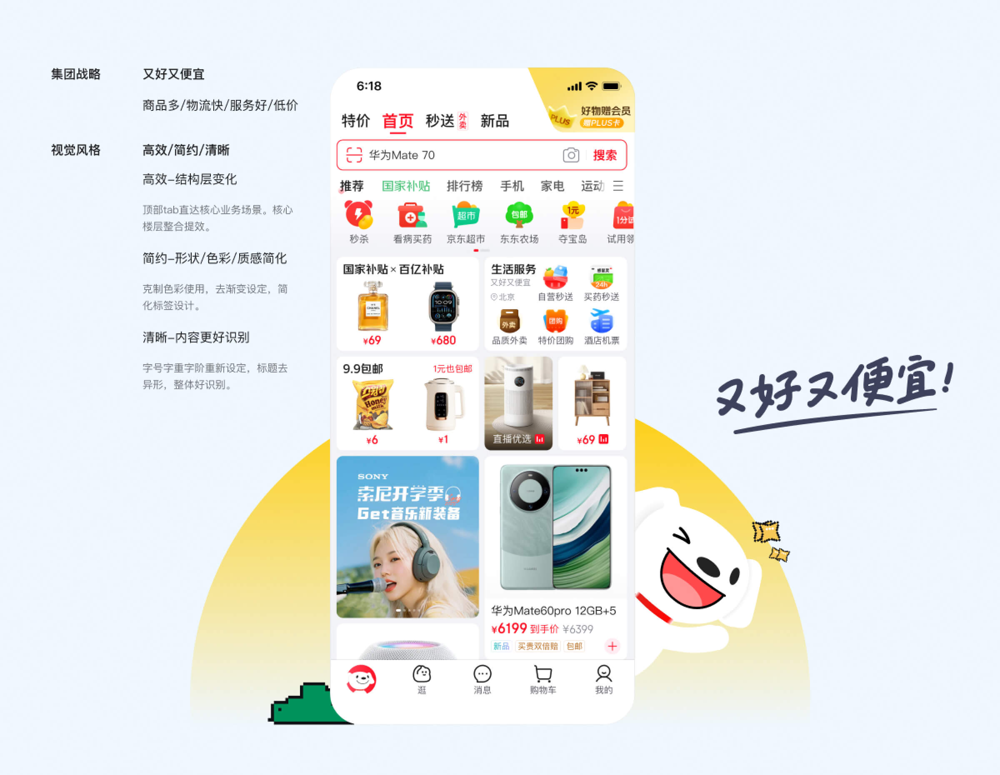
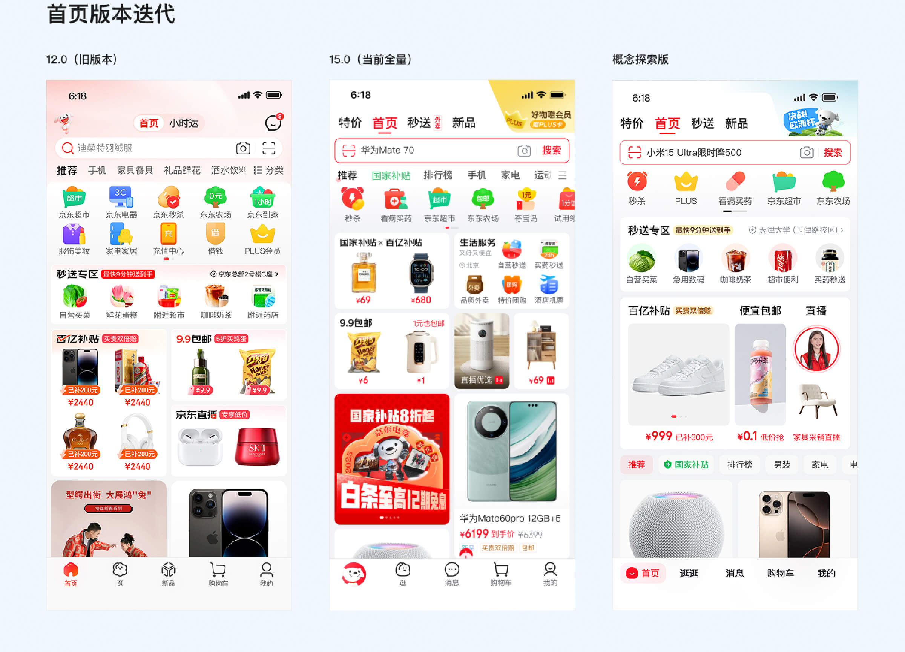
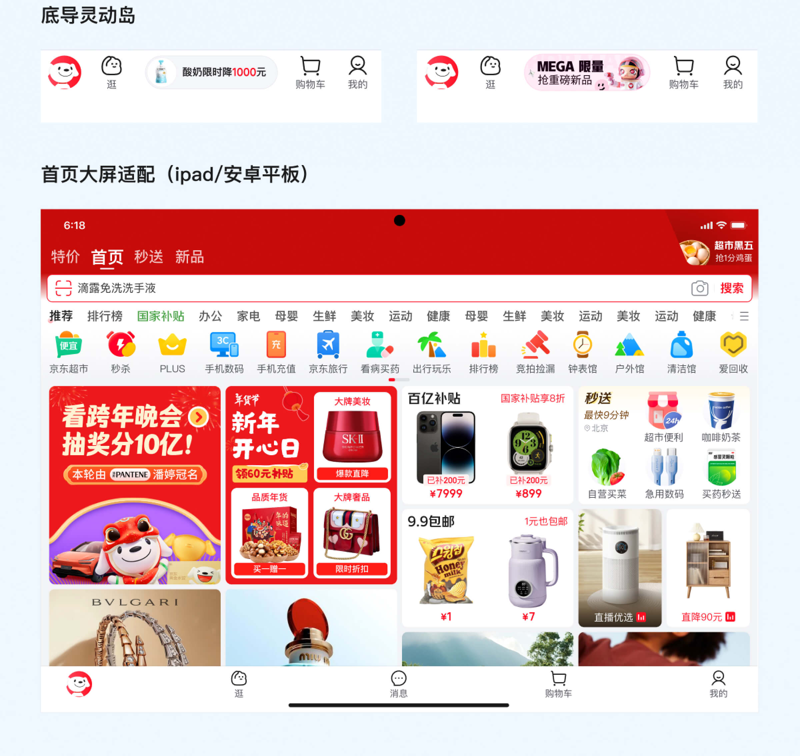

NO.1
京东APP首页15.0
NO.2
问题与目标
核心问题：
2.1 页面结构复杂，内容层级不够清晰
首页承载搜索、频道、推荐、营销、活动等多类内容，用户浏览路径容易被干扰。
2.2 视觉表达趋于稳定，但缺少版本升级感
原有设计能够满足基础使用，但在大版本发布节点中，缺少足够明确的新鲜感和视觉记忆点。
2.3 多业务入口之间风格不统一
不同业务模块在图形语言、色彩、卡片样式和运营氛围上存在差异，影响首页整体一致性。
2.4 营销信息与用户体验之间需要重新平衡
首页既要承载业务转化，也要降低用户对广告感、打扰感的负面感知。
设计目标：在满足业务展示与转化需求的基础上，优化首页结构与视觉体验，让页面更清晰、更统一，也更符合 15.0 大版本的升级感。
NO.3
我负责的内容
前期：参与竞品分析与趋势整理，梳理电商首页在结构、模块、运营氛围和推荐流上的设计方式。
定稿：负责首页多个核心模块的视觉设计，并完成长屏、暗黑模式、大屏适配等多版本方案。
规范沉淀：参与首页视觉规范整理，包括字体、间距、卡片、图标、色彩和运营素材适配规则。
协作推进：与产品、运营、研发团队协作，完成方案评审、设计走查、上线跟进和后续优化。
NO.4
结果与复盘
新版首页上线后，整体页面点击表现正向，搜索、核心楼层、小首页、推荐、消息等入口数据表现较好。
通过本次改版，首页在信息层级、视觉统一性和版本升级感上得到提升，进一步降低了部分营销区域带来的广告感和打扰感。
这次项目让我更深入理解了大型电商首页的复杂性。首页设计不只是视觉美化，而是在业务目标、用户体验和品牌表达之间找到平衡。对于高频使用的产品，大版本改版既要有新鲜感，也要保留用户熟悉的使用习惯。


